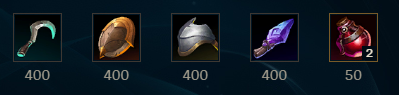

Conceptos de LOL para principiantes
Lo basico
Aqui aprenderemos lo basico de lo basico para poder jugar LOL, se tratara de explicar de la manera más sencilla para que se te facilite a la hora de comenzar, no se entrara a detalle
carriles o posiciones
Lo primero que uno tiene que saber es que LOL es un juego de equipo 5vs5 en donde hay 5 carriles, lineas o posiciones (como le quieras decir) los caules tienen que llegar al nexo enemigo y destruirlo. Estos carriles son:
- Top o superior, que esta ubicado en la parte de arriba.
- Mid o medio, que se encuentraen el centro.
- Sup o soprte, ellos acampañan al adc en la parte de abajo.
- Adc o carry, que se enceuntra en la parte de abajo. Tambien llamado como Bot.
- Jungla que se encuentra en medio de todos los carriles.
Ya conociendo los nombres de los carriles y donde estan ubicados, toca conocer las posiciones de los campeones.
Posiciones de los campeones
Dentro del mundo de LOL puedes encontrar más de 140 de campeones, cada con su estilo de juego, sus habilidad, sus
posiciones y su historia.
Puedes eligir caulquiera que se acomple a tu forma de jugar.
A los campeones los podemos dividirlos en: magos, combatientes, tanques, soportes, asesinos y tiradores. Mas
adelante hablaremos un poco más
a fondo cada uno de ellos, ahora solo veremos en que carril tiene que ir cada campeon. Un dato interesante esque
cada campeon puede ser
de dos tipos, es decir, combatiente/mago, combatiente/tanque, mago/soporte, soporte/tanque y asi sucesivamente.
Bueno en otro momento hablamos más a detalle de los campeones, ahora pasaremos a las posiciones que les corresponda, comenzamos con:
Top o superior:
En este carril encontramos a los combatientes o luchadores, estos se enfocan en pelear uno a uno, poseen un
rango
muy pequeño de ataque
ya que son cuerpo a cuerpo, estos mismos poseen una gran resistencia tanto de daño magico como de daño
fisico (luego hablaremos de los
tipos de daño) y también una gran cantidad de vidad, poseen poca movibilidad. Tambien se los puede
considerar como tanques pero estos
poseen un mayor daño que los tanques en general y son buenos iniciadores par alas peleas en equipo.
Mid o medio:
En el carril de mid podemos encontrar a los magos y asesinos, estos se caracterizan por tener la capacidad
de
destruir enemigos de manera rapida,
encadenando sus habilidades para completar su combo. Por lo general los que juegan mid saben recibir ayuda
del Jungla (más adelante se hablara
de este). los que juegan el carril de mid, ya que esta ubicado en la mitad del mapa tienen la facilidad de
moverse y poder ayudar ya sea al Top, al
Jungla o a la Bot para poder ganar ventaja y terminar la partida de manera rapida. E igual que la Top este
carril es 1vs1,
pero con menos cantidad de vidad.

Inferior o Bot:
El carril de Bot tiene una caracteristica, aqui van a estar el adc, carri o tirador (como te guste decirle)
y soporte devido a que el adc tiene menor cantidad
de vidad necesita de un buen soporte que le ayude a mantenerse vivo, los adc tiene un mayor rango de ataque
lo que les permite mantenerse en la retarguadia
por asi decirlo. Por otra parte, los soportes como ya se
mensiono
pueden ser mago/soporte, soporte/tanque y asi sucesivamente cada uno con una caulidad diferente
y obviamente habilidades diferentes por ejemplo los mago/soporte no poseen mucha vida pero se pueden
mantener a distancia en cambio los
tanque/soporte devido a que son cuerpo a cuerpo tienen que acercarse para pelear pero en cambio poseen una
mayor cantidad de vida.
Jungla:
Bueno pasando a la ultima posición tenemos la Jungla, la jungla como vemos en el mapa, es la parte que se
encuentra en medio de los carriles (esa zona boscosa). El
jungla es un rol importante en el juego ya que
este tiene la tarea de ayudar a los otros carriles siempre que se pueda, aparte de eso, el jungla tiene que
lograr los objetivos
que se encuentran en el mapa parece simple pero recuerda que el equipo contrario
tambien tiene jungla con los mismos objetivos, a veces ser un buen jungla puede marcar
el rumbo de la
partida. Si querido amigo ser jungla con ella una gran resposabilidad pero tambien puede ser muy
entretenido. En la jungla la verdad pueden ir asesinos y
luchadores pero, hay algunos locos que llevan algunos magos hasta incluso lleban soportes pero estos lo
saben hacer los que ya tienen dominan algunso trucos de la jungla.
Runas y Objetos
Ya habiendo hablado de los carriles, las posiciones, de los campeones y como estan divididos. Ahora hablaremos de las runas y los objetos que nos ayudaran a lo largo de la partida, tanto al comienzo, como hasta el final de la partida.
Runas:
Las runas son adiciones que le podemos equipar a nuestros campeones, estas runas permiten que el campeon pueda ganar mas fuerza bonificando ciertos caracteristicas eso ya dependera de las runas que uno quiera equipar. Hay muchas runas las cuales tambien estan dividas en:
- Precisión, esta runa da una mejora de ataques y ayuda a mantener el daño en pelea. Por lo general la usan los adc y algunos luchadores.
- Dominación, esta runa ayuda mucho a los asesinos ya que les da ese daño explosivo para matar a los enemigos de un combo.
- Brujeria, runa que se enfoca mas en soportes y magos, les ayuda a desgastar a los enemigos y asi poder matarlos mas adelante.
- Valor, la runa de valor genera durabilidad y ayuda basatente a los tanques ya que brinda mas vida y resistencias.
- Inspiración, esta runa es interesante depende de como la uses puede ayudar bastante, por lo general.

Cada una de estas runas mencionadas tienen su propia caracteristica, el como y cuando usarlas dependera del campeon que este jugando y de tu estilo de juego. Ya habiendo hablado de las runas en general hablaremos un poco de como se arman las runas, algo rapido peo que se entienda.
Para armar las runas debemos elegir nuestra runa principal y una runa secundaria, en la runa principal tendras cuatro ranuras y la secundaria tendra dos ranuras. En la primera ranura se escogera una runa clave:
El armado de las runas como ya se lo mensiono, varia mucho estas pueden estar convinadas como brujeria y dominacion, valor y precisión hasta incluso dominacion y inspiración:
Objetos:
Ahora pasamos a los objetos, los objetos nos brindaran mejoras y aumentaran nuestras estadisticas, ya sea aumento de daño (ya sea magico o fisico), velocidad de ataque, resistencian magica, armadura y tambien la vida. Y te estras preguntando, ¿como consigo estos objetos?, de donde los sacos, pues los onjetos los obtienes comprando en la tienda ya dentro de partida. y como te los compras, pues con oro, y como consigues oro, el oro lo consigues farmeando (más adelante se vera de forma detallado esto).
Al comenzar la partida podemos comprar lo que se conoce como objetos de iniciacion, estos objetos depende que posicion vayas y clase de campeon vallas, osea si vas un mago se te ofreceran obejtos de magos, si vas tirador se te ofreceran objetos de tiradores y asi con los soporte y con los luchadores.
- Objetos de iniciación de los tiradores o luchadores (aqui tambien incluyen los tanques):
- Objetos de iniciación de magos:
- Objetos de iniciación de soportes (ya sean tanques, magos o luchadores):
- Objetos de inicio de los junglas
Al iniciar la partida se nos dara 500 de oro los cuales los ocuparemos para comprar nuestro onjeto inicial y uno que otr posion (la que no alcanse XD)